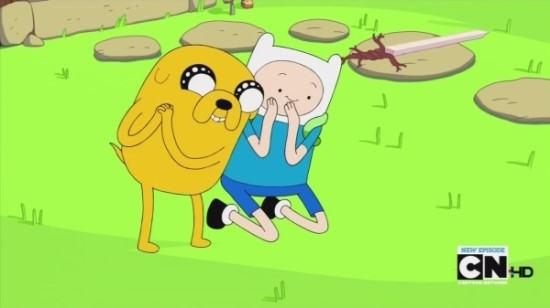

- Adventure Time
- Finn
- Jake
Adventure Time
《핀과 제이크의 어드벤처 타임》(영어: Adventure Time with Finn & Jake) 줄여서 《어드벤처 타임》(영어: Adventure Time)[주 2]은 펜들턴 워드가 기획하고 카툰 네트워크에서 방영한 미국의 애니메이션이다.
주인공인 인간 소년 ‘핀’과, 마법의 힘으로 몸의 크기와 모양을 자유자재로 변화시킬 수 있는 개 ‘제이크’의 모험을 다루고 있다. 둘은 종말 이후의 세상인 ‘우 랜드’에서 산다. 이 시리즈의 파일럿은 닉툰스와 프레드레이터 스튜디오가 제작한 단편 애니메이션 소개 프로그램인 《랜덤! 카툰스》의 일부로 만들어졌다. 인터넷상에서 큰 화제를 모은 후 카툰 네트워크가 장편 시리즈로 만들어 2010년 3월 11일에 선공개가 이루어졌으며, 그해 4월 5일 첫 공식 방영을 시작했다.

최고 시청자 수 300만 명을 기록한 카툰 네트워크의 대표작 중 하나이며, 그 인기로 청소년과 성인층 사이에서 두터운 팬덤을 형성하는 데도 성공하였다. 여섯 번의 프라임타임 에미상, 세 번의 애니상과 두 번의 영국 아카데미 어린이상 등 다수의 수상 경력이 있다. 스핀오프 버전인 코믹스는 아이스너상과 두 번의 하비상을 받았다. 또한 애니메이션을 기반으로 한 여러 비디오 게임이나 코믹스, 각종 상품이 출시되기도 하였다.